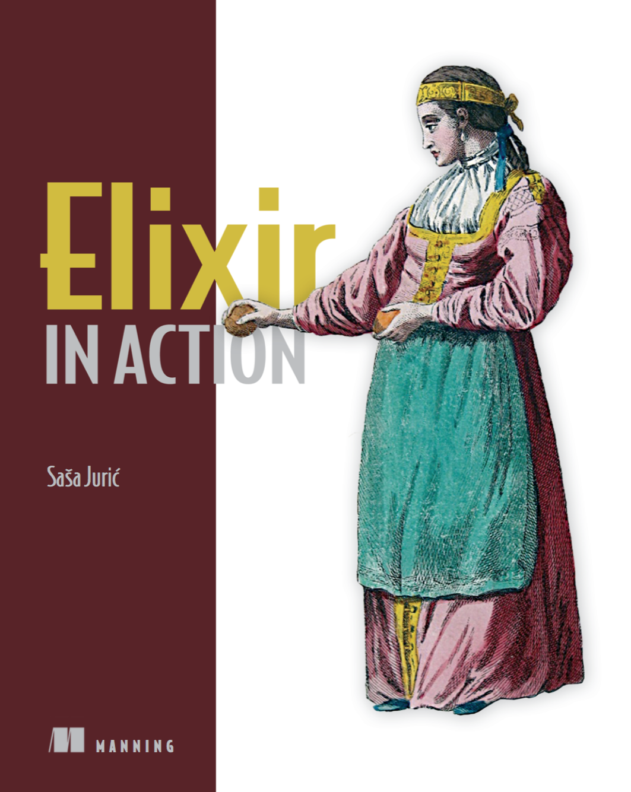
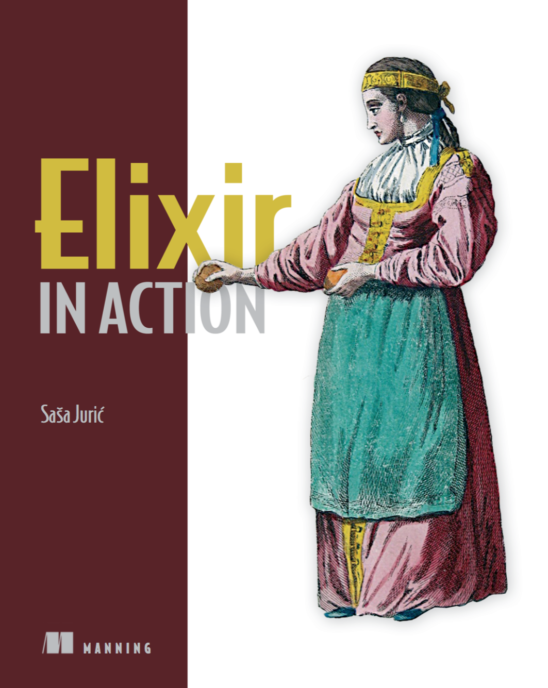

by @vasspilka
iex> my_utf8_string = "hello " <> "Iñtërnâtiônàlizætiøn""hello Iñtërnâtiônàlizætiøn"iex> String.upcase(my_utf8_string)"HELLO IÑTËRNÂTIÔNÀLIZÆTIØN"iex> :atom:atomiex> Constant == :"Elixir.Constant"trueiex> is_atom(true) && is_atom(false)true
iex> 1000 == 1_000trueiex> 0.314159e1 == 314159.0e-5trueiex> my_range = 1..51..5iex> 10 / 52.0iex> (rem(13, 12) + 2 + div(8, abs(3 - 5))) * round(6.4)42
iex> my_tuple = {:ok, "return value", 715}{:ok, "return value", 715}iex> elem(my_tuple, 2)715iex> put_elem(my_tuple, 2, 815){:ok, "return value", 815}iex> my_elem{:ok, "return value", 715}iex> my_map = %{:first => "Ted", :last => "Naleid"}%{first: "Ted", last: "Naleid"}
iex> my_list = [1, 2, 3][1, 2, 3]iex> my_list ++ [4, 5][1, 2, 3, 4, 5]iex> [0 | my_list][0, 1, 2, 3]iex> ex = [{:lang, "Elixir"}, {:creator, "José"}, {:version, 1.4}][lang: "Elixir", creator: "José", version: 1.4]iex> ex[:creator]"José"
iex> date = %{year: 2017, month: "March", day: "23"}%{year: 2017, month: "March", day: 22}iex> date.year2017iex> date[:year] == date.yeartrueiex> %{date | day: 23}%{year: 2017, month: "March", day: 23}iex> %{"string" => :val, 7 => 8, &(&1) => "say what?"}%{7 => 8, #Function<...> => "say what?", "string" => :val}
iex> defmodule Person do...> defstruct first: "Vasilis", last: "Spilka"...> end{:module, Person, …}iex> %Person{}%Person{first: "Vasilis", last: "Spilka"}iex> %Person{first: "Vasek"}%Person{first: "Vasek", last: "Spilka"}iex> %Person{nope: "Bad Field"}** (CompileError) iex:4: unknown key :nope for struct
iex> boss = %Person{first: "Ragnaros", last: "Firelord"}%Person{first: "Ragnaros", last: "Firelord"}iex> is_map(boss)trueiex> IO.inspect(boss, structs: false)%{__struct__: Person, first: "Ragnaros", last: "Firelord"}iex> defmodule Elemental, do: defstruct [:first, :last]{:module, Elemental, ...}iex> boss = %{boss | __struct__: Elemental}%Elemental{first: "Ragnaros", last: "Firelord"}
iex> ~w(foo bar baz)["foo", "bar", "baz"]iex> ~w(foo bar baz)a[:foo, :bar, :baz]iex> ~s(String with escape codes \x26 #{"inter" <> "polation"})"String with escape codes & interpolation"iex> regexp = ~r/foo|bar/~r/foo|bar/iex> "foo" =~ regexptrue
iex> sum = fn a, b -> a + b end#Function<12.90072148/2 in :erl_eval.expr/5>iex> sum.(1, 2)3iex> &(&1 + &2).(1, 2) # shortened closure syntax3iex> fun = fn kl -> Enum.reduce(kl, "", & &2 <> elem(&1, 1)) end#Function<6.87737649/1 in :erl_eval.expr/5>iex> fun.(foo: "foo", bar: "bar", bux: "bux")"foobarbux"
iex> a = {:ok, 1}{:ok, 1}iex> {:ok, b} = {:ok, 1}{:ok, 1}iex> b1
iex> [a, b, c] = [1, 2, 3][1, 2, 3]iex> a1iex> [head | tail] = [1, 2, 3][1, 2, 3]iex> head1iex> tail[2, 3]
case HTTP.get(url) do{:ok, %HTTP.Resp{ status: 200, body: body }} ->IO.puts body{:ok, %HTTP.Resp{ status: 404 }} ->IO.puts "Not found :("{:ok, %HTTP.Resp{ status: status }} ->IO.puts "HTTP Status: #{status}"{:error, %HTTP.Error{ reason: reason }} ->IO.inspect reason_ ->IO.puts "¯\_(ツ)_/¯"end
def execute({:ok, good_value}) doIO.puts "Known good value: #{good_value}"enddef execute({:error, error_reason}) doIO.puts "Error! #{error_reason}"endiex> execute({:ok, "Yay!"})Known good value: Yay!iex> execute({:error, "Boo!"})Error! Boo!
|>Like unix pipe operator, it passes result from last method as first argument
to_string(Enum.reduce(Enum.map([1,2,3], & &1 * 2), 0, & &1 + &2))list = [18, 31, 30, 30, 33, 6]list = Enum.map(list, & &1 + 5)list = List.insert_at(list, 3, 40)list = Enum.map(list, & &1 * 3)[18, 31, 30, 30, 33, 6]|> Enum.map(& &1 + 5)|> List.insert_at(3, 40)|> Enum.map(& &1 * 3)
Outputs 'Elixir!' ⊙.☉ Woot?
iex> parent = self()#PID<0.90.0>iex> spawn(fn -> send parent, "hello world" end)#PID<0.93.0>iex> receive do message -> IO.puts message endhello world:ok
iex> :crypto.md5("sekr1t")<<192, 151, 240, 131, 252, 86, 1, 90, 71, 171, 2, …
Can easily leverage 30+ years of Erlang libraries
defmacro unless(expr, opts) doquote doif(!unquote(expr), unquote(opts))endendunless true doIO.puts "this will never be seen"end
iex> ast = quote, do 2 * 2 / 7{:/,[context: Elixir, import: Kernel],[{:*,[context: Elixir, import: Kernel], [2, 2]}, 7]}
Underlying AST looks a bit like a lisp
defmodule SimpleQueue douse GenServerdef start_link(state \\ []) doGenServer.start_link(__MODULE__, state, name: __MODULE__)enddef queue, do: GenServer.call(__MODULE__, :queue)def dequeue, do: GenServer.call(__MODULE__, :dequeue)def enqueue(value), do: GenServer.cast(__MODULE__, {:enqueue, value})def handle_call(:queue, _from, state), do: {:reply, state, state}def handle_call(:dequeue, _from, []), do: {:reply, nil, []}def handle_call(:dequeue, _from, [value|state]) do{:reply, value, state}enddef handle_cast({:enqueue, value}, state) do{:noreply, state ++ [value]}endendSimpleQueue.start_link([1,2,3,4,5])SimpleQueue.queue #=> [1,2,3,4,5]
iex> :observer.start$ mix new myapp* creating README.md* creating .gitignore* creating mix.exs* creating config* creating config/config.exs* creating lib* creating lib/myapp.ex* creating test* creating test/test_helper.exs* creating test/myapp_test.exsYour mix project was created successfully.You can use mix to compile it, test it, and more:cd myappmix testRun `mix help` for more commands.
defmodule MyProject.Mixfile douse Mix.Projectdef project do[app: :myapp,version: "0.0.1",elixir: "~> 1.4.4",deps: deps()]enddef application do[extra_applications: [:logger]]enddefp deps do[{:ecto, "~> 0.11.3"},{:postgrex, "~> 0.8.1"},{:cowboy, github: "extend/cowboy"}]endend
iex is a Great REPLiex> h Enum.map<tab>map/2 map_join/3 map_reduce/3iex> h Enum.map/2def map(collection, fun)Returns a new collection, where each item is the result of invoking funon each corresponding item of collection.For dicts, the function expects a key-value tuple.Examples┃ iex> Enum.map([1, 2, 3], fn(x) -> x * 2 end)┃ [2, 4, 6]┃┃ iex> Enum.map([a: 1, b: 2], fn({k, v}) -> {k, -v} end)┃ [a: -1, b: -2]
pryrequire IExdef index(conn, _params) doIEx.pryconn |> render "index"end
Similar to the JavaScript debugger; command
With Erlang/OTP releases
Hot-code swapping and other Beam goodies
Noteable Libraries
Noteable Projects
 Hex Downloads (from @emjii on 2015-06-24)
Hex Downloads (from @emjii on 2015-06-24)
++ Many more https://devhub.io/repos/doomspork-elixir-companies
 

Find me @
https://twitter.com/vasspilka
https://github.com/vasspilka